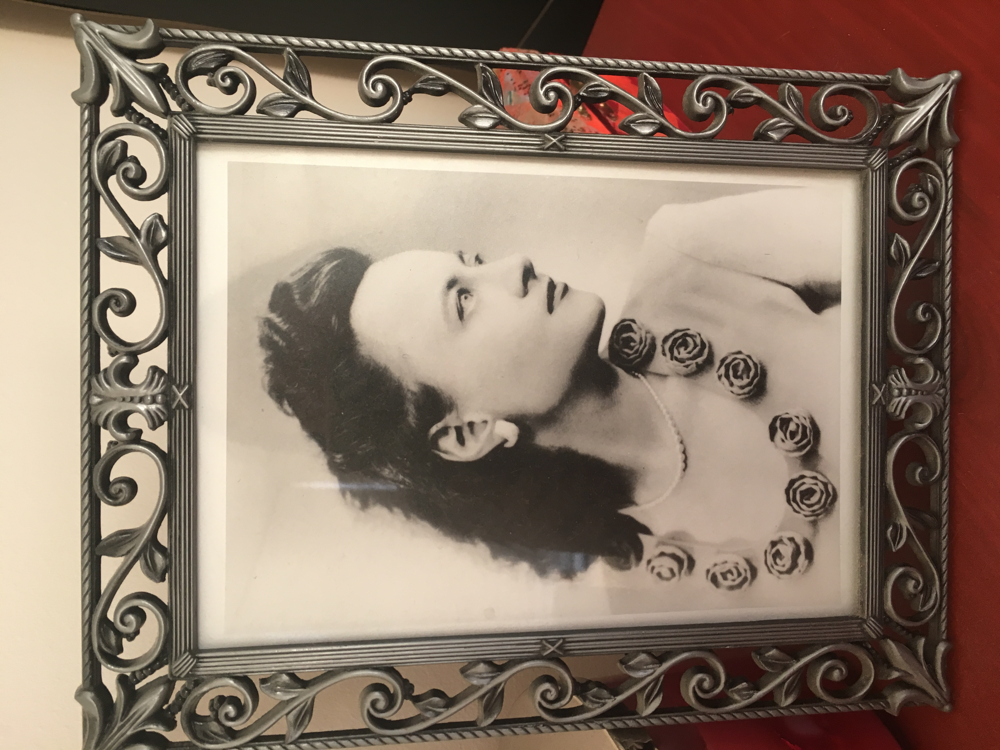

<DOCTYPE html>
<html>
  <h1> Man at the Crossroads </h1>
  <h2> Mural at Rockefeller Center </h1>

  <h3>Painted <b>and</b> Destroyed in 1933 </h3>


  <ol>
    <li>Painting</li>
    <li>Controversy</li>
    <li>Destruction</li>
    <li>Connection with my Grandma</li>
  </ol>


<h1>Man at the Crossroads by Diego Rivera</h1>

Picture by Lucienne Bloch
<br>
<a href= "https://www.aaa.si.edu/collections/interviews/oral-history-interview-lucienne-bloch-12814">Interview with Lucienne Bloch </a>


<h1> Picture of My Grandma </h1>
<br>

<br>

<form>
  <text>Do you agree with Diego Rivera's decision to destroy the painting? Explain your answer. </text> <input>
  <br>
  <button>submit</button>
</form>


</html>
